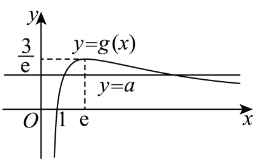

示例学校高二周测（4） Q15
题目
15．已知函数f(x)=a^2x^2-3axlnx，a>0．
(1)当a=1时，求曲线y=f(x)在(1,f(1))处的切线方程；
(2)讨论f(x)的零点个数．
答案与解析
15．【详解】（1）当a=1时，f(x)=x^2-3xlnx,f(1)=1．f^'(x)=2x-3lnx-3,f^'(1)=-1．
所以曲线y=f(x)在(1,f(1))处的切线方程为y-1=-1(x-1)，即x+y-2=0．
（2）因为a>0,x>0，令f(x)=a^2x^2-3axlnx=0，得ax-3lnx=0，即a=(3lnx)/(x).
令g(x)=(3lnx)/(x)(x>0)，所以f(x)的零点个数等价于y=g(x)与y=a的图象交点的个数.
又因为g^'(x)=(3(1-lnx))/(x^2)，当0<x<e时，g^'(x)>0；当x>e时，g^'(x)<0.

所以函数g(x)在(0,e)上单调递增，在(e,+∞)上单调递减，且g(1)=0，有极大值也是最大值g(e)=(3)/(e)，如图：由图可知，当a>(3)/(e)时，函数y=g(x)与y=a的图象无交点；
当a=(3)/(e)时，函数y=g(x)与y=a的图象有1个交点；
当0<a<(3)/(e)时，函数y=g(x)与y=a的图象有2个交点.
综上，a>(3)/(e)时，f(x)的零点个数为0；a=(3)/(e)时，f(x)的零点个数为1；0<a<(3)/(e)时，f(x)的零点个数为2.
结构化摘要
{
"question_id": "szzx2024g2week4_q015",
"answer": "【详解】（1）当a=1时，f(x)=x^2-3xlnx,f(1)=1．f^'(x)=2x-3lnx-3,f^'(1)=-1．",
"assets": [
{
"id": "img001",
"type": "image",
"rel_id": "rId9",
"source": "word/media/image3.png",
"path": "assets/szzx2024g2week4_q015_image_01.png"
}
],
"ole_objects": [],
"extraction": {
"source_paragraph_range": [
45,
63
],
"solution_paragraph_range": [
38,
47
],
"formula_count": 45,
"image_count": 1,
"ole_count": 0,
"quality_flags": [
"contains_images",
"contains_omml"
]
}
}